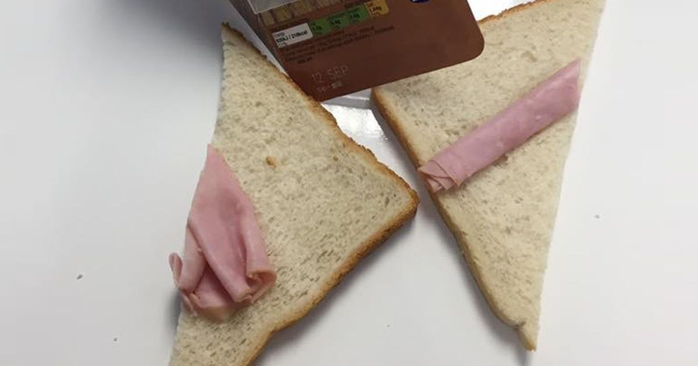

The best sandwich for when your sad
->Home

This simple recipe will take mere seconds to slap together!
We all know life can be hard sometimes and that we might not always have the time to look after ourselves and cook the food that we really deserve or are craving. This simple recipie may not win any awards on taste or presentation but it will fill a small part of that endless void inside you.
Ingredients
- Old bread you found and checked for mould(A little won't hurt you)
- Ham from the back of the fridge you forgot to cover(It's in date but it went a bit dry)
- A pack of butter you havn't looked at for a while
Steps
- Push any clutter on your worktop to the side or the floor
- Open the butter and see if there's any left(Unlikey you haven't been shopping in weeks)
- Peal our the last bit of ham scraps you have in the pack
- If you want to go the extra step try to arrange to cover the bread as best as possible but we aren't judging anyone here
- Add the top slice of brerad sorta ontop and your done
- Dont bother cutting it into slices just stuff it in and get back to crying!